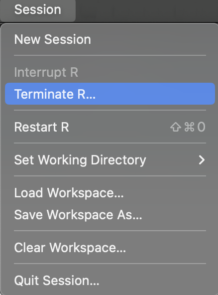
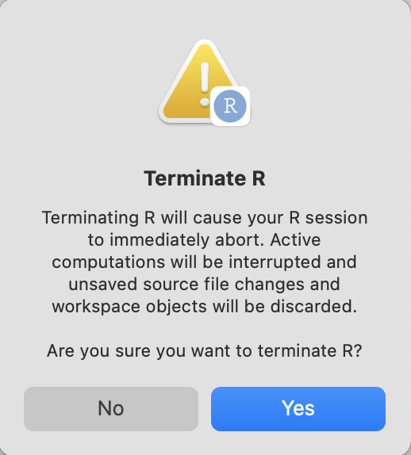

install.packages("devtools")
library(devtools)
devtools::load_all()Appendix: Creating packages in Posit Workbench
“Can the .Rproj file convert an R project into an R package?”
The technical answer is no, because the .Rproj only activates the Build pane in the IDE. The tools in the Build pane are directly connected to the devtools package (hence the PackageUseDevtools: Yes in the .Rproj file).
For example, if the mandatory fields are added to the DESCRIPTION, but the .Rproj file doesn’t have any of the package configuration fields, then the Build pane will not be displayed:
 Mandatory
Mandatory DESCRIPTION fields with package configuration in .Rproj file
Conversely, changing the Project build tools to Package will add the package development fields in the .Rproj file without having the mandatory fields in the DESCRIPTION will trigger the Build pane:

DESCRIPTIONDESCRIPTION file after changing projApp.RprojHowever, if we install devtools and try to load the code in the R/ folder with Build > Load All, we will get the following error:

load_all() code in R/ folderThe image above demonstrates why setting the Project build tools in your Project Options is insufficient to convert a project into a package. The directory must include a DESCRIPTION file containing the mandatory fields and an .Rproj file with the package configuration fields listed above to be a functional R package.
Read more about DESCRIPTION file fields in R Packages, 2ed
RStudio project files
You can read more about the benefits of using RStudio projects to configuring project-level options here.
Terminate
To get the IDE to re-read the .Rproj file, you can terminate the session (Session > Terminate R… > Yes)


Creating app-packages: scenarios
The callout blocks below represent scenarios I’ve encountered requiring an app-package:
Scenario #1
In this case, you’re in the perfect position to create a new package with usethis::create_package() or devtools::create(). If you’re using Posit Workbench, do File > New Project > New Directory > R Package.
Scenario #2
This is a circumstance where I’d manually create the DESCRIPTION file (or use usethis::use_description()) and set the package-level build tools (Tools > Project options > Build Tools > Project build tools). Then I’d begin organizing the shiny app files into a package structure (i.e., move .R files into the R/ folder, data files into the data/ folder, etc.)